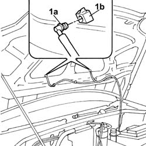
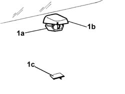
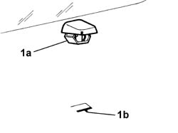

5050B10 front windscreen washer jets - r+r clean and/or position
- Path
- Procedures > 50 AUXILIARY UNITS > 5050 SCREEN WASHERS AND HEADLAMP WASH/WIPE > 5050B windscreen wash/wipe > 5050B10 front windscreen washer jets - r+r clean and/or position
- Kind
- repair procedure (removal / refitting; the operation number is the code)
- Applies to
- all engines; all production periods
- Interactive page
- https://sloeber94.github.io/elrnDB-fDbl/en/#/2584857
Applies to: all engines; all production periods
 Removing
Removing
 Refitting
RefittingOpen the bonnet.
Op. 7025A22 SOUNDPROOFING LINING FOR BONNET LID - R+R
1. Remove the fluid supply pipe (1a) from the jet (1b).

Applies to: all engines; all production periods
1. Adjust the side tabs (1a) and remove the jet 1b) from the housing (1c) in the bonnet lid.

Applies to: all engines; all production periods
Refitting
Removing1. Make sure that the reference on the jet (1a) coincides with the reference on the housing (1b).

Applies to: all engines; all production periods
Connect the windscreen washer fluid supply pipe to the jet.
Op. 7025A22 SOUNDPROOFING LINING FOR BONNET LID - R+R
Close the bonnet lid.